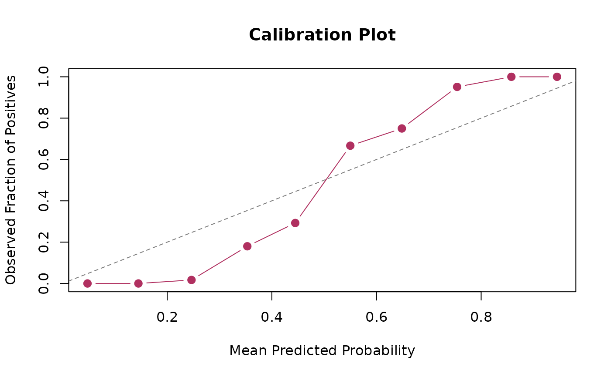
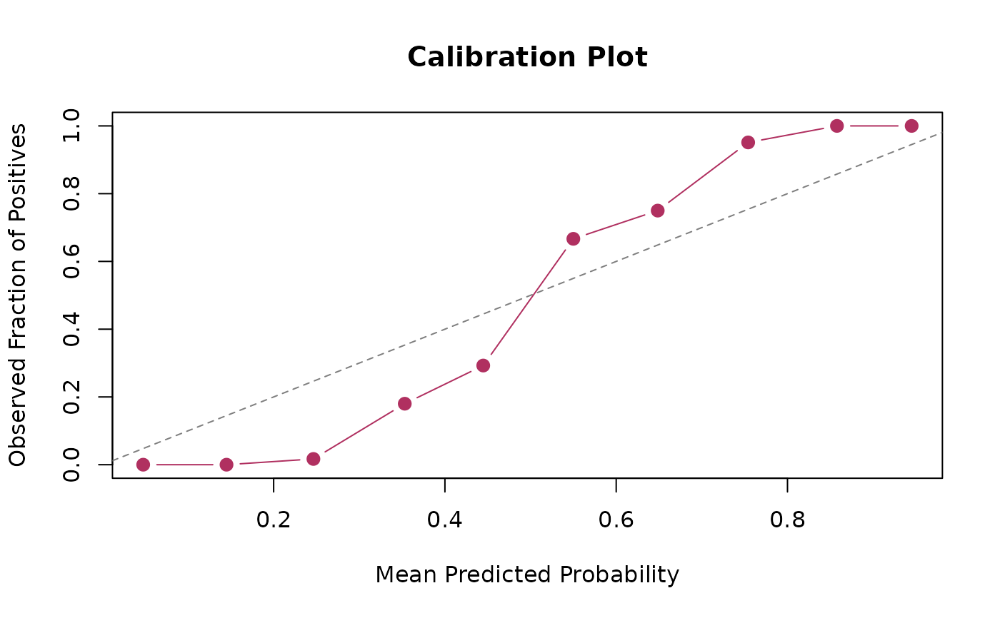

calibration_plot() generates a calibration plot to assess the performance of a model's probabilistic predictions.
Usage
calibration_plot(
actual,
predicted,
breaks = seq(0, 1, by = 0.1),
show_plot = TRUE,
...
)Arguments
- actual
a vector of true outcomes. Must be a numeric vector containing
0and1.- predicted
a numeric vector of predicted probabilities, typically ranging from
0to1.- breaks
a numeric vector of cut points used to bin the predicted values. Defaults to
seq(0, 1, by = .1).- show_plot
logical. If
TRUE(the default), a plot is displayed. IfFALSE, the summary data is returned without plotting.- ...
additional arguments passed to the
plot()function. This can be used to customize the plot's title (main), color (col), point and line types (type), etc.
Value
If show_plot = TRUE, the function draws a plot as a side effect and invisibly returns a data frame with the summary statistics.
If show_plot = FALSE, it visibly returns the data frame.
The returned data frame includes the following columns:
- bin
The bin number to which the predictions were assigned.
- n
The number of observations in each bin.
- actual
The mean of the true outcomes in each bin (i.e., the fraction of positives).
- predicted
The mean of the predicted probabilities in each bin.
Details
The function groups predicted probabilities into bins by findInterval(predicted, breaks, rightmost.closed = TRUE, left.open = FALSE, all.inside = FALSE), and plots the mean predicted probability (x-axis) against the fraction of positive actual outcomes (y-axis) for each bin.
A perfectly calibrated model would have points lying on the diagonal line \(y = x\), indicating that a predicted probability of, for example, 0.8 corresponds to an 80 percent proportion of positive outcomes.
Examples
# Generate sample data
n_obs <- 500
actual <- sample(0:1, n_obs, replace = TRUE, prob = c(0.7, 0.3))
# Generate slightly miscalibrated predictions based on actuals
predicted <- ifelse(actual == 1,
rbeta(n_obs, shape1 = 4, shape2 = 1.5),
rbeta(n_obs, shape1 = 1, shape2 = 4))
predicted <- pmin(pmax(predicted, 0), 1)
# Basic plot
calibration_plot(actual, predicted)
 # Customize the plot
calibration_plot(actual, predicted,
main = "Calibration Plot",
xlab = "Mean Predicted Probability",
ylab = "Observed Fraction of Positives",
col = "maroon",
pch = 19,
cex = 1.2)
abline(0, 1, col = "gray50", lty = 2L)

# Get the summary data without plotting
cal_data <- calibration_plot(actual, predicted, show_plot = FALSE)
print(cal_data)
#> # A tibble: 10 × 4
#> bin n actual predicted
#> <int> <int> <dbl> <dbl>
#> 1 1 104 0 0.0477
#> 2 2 89 0 0.145
#> 3 3 59 0.0169 0.246
#> 4 4 50 0.18 0.353
#> 5 5 41 0.293 0.445
#> 6 6 21 0.667 0.550
#> 7 7 24 0.75 0.648
#> 8 8 41 0.951 0.754
#> 9 9 43 1 0.858
#> 10 10 28 1 0.945
# Customize the plot
calibration_plot(actual, predicted,
main = "Calibration Plot",
xlab = "Mean Predicted Probability",
ylab = "Observed Fraction of Positives",
col = "maroon",
pch = 19,
cex = 1.2)
abline(0, 1, col = "gray50", lty = 2L)

# Get the summary data without plotting
cal_data <- calibration_plot(actual, predicted, show_plot = FALSE)
print(cal_data)
#> # A tibble: 10 × 4
#> bin n actual predicted
#> <int> <int> <dbl> <dbl>
#> 1 1 104 0 0.0477
#> 2 2 89 0 0.145
#> 3 3 59 0.0169 0.246
#> 4 4 50 0.18 0.353
#> 5 5 41 0.293 0.445
#> 6 6 21 0.667 0.550
#> 7 7 24 0.75 0.648
#> 8 8 41 0.951 0.754
#> 9 9 43 1 0.858
#> 10 10 28 1 0.945